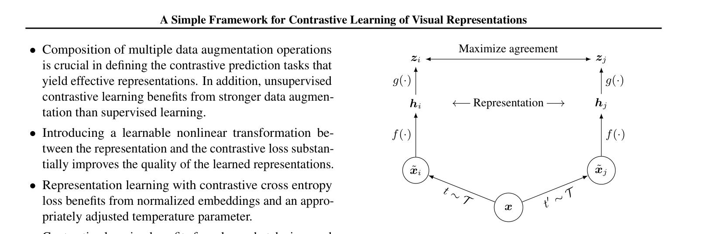
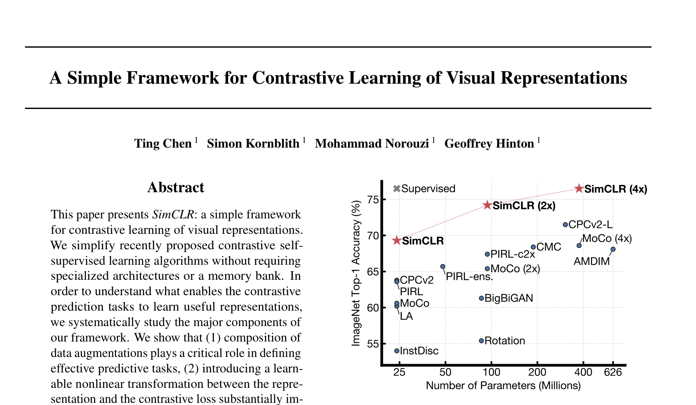
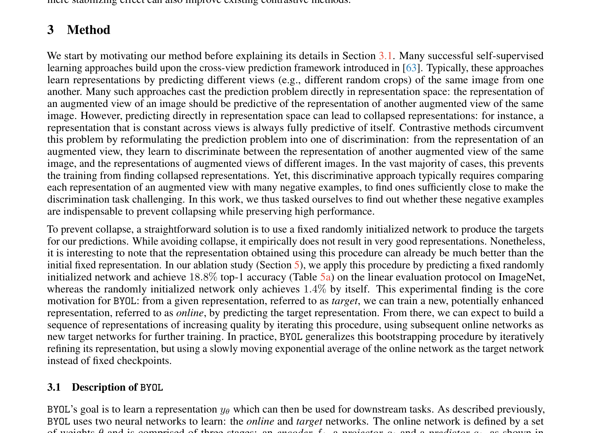
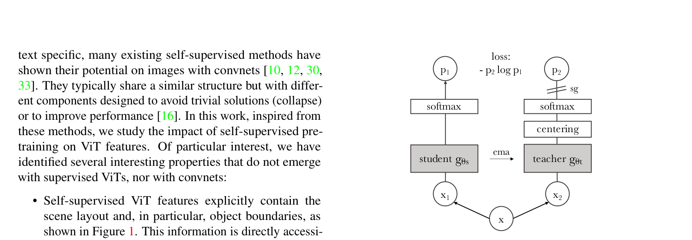
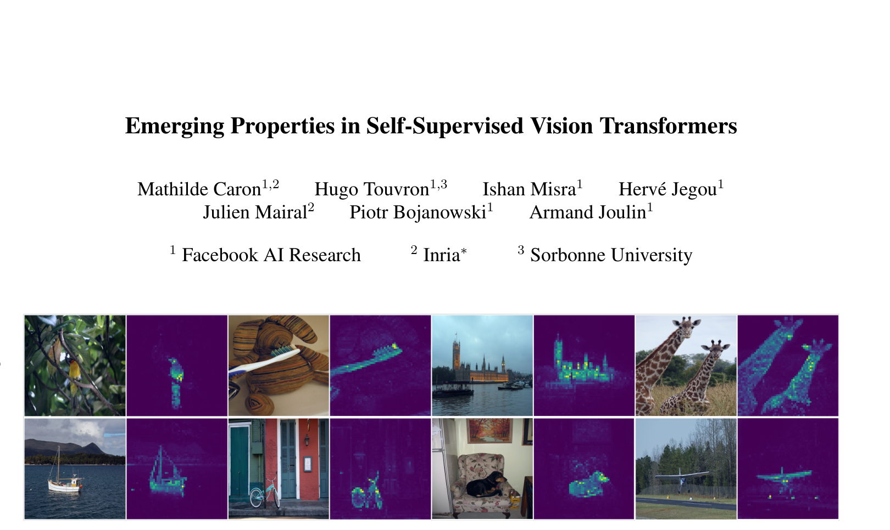

对比学习综述¶
📄 涉及论文链接：
第一阶段（百花齐放）：InstDisc | CPC | CMC
第二阶段（双雄争霸）：MoCo v1 | SimCLR | MoCo v2 | SimCLR v2
第三阶段（无负样本）：SwAV | BYOL | SimSiam
第四阶段（Transformer）：Barlow Twins | MoCo v3 | DINO
目录¶
- 核心要点
- 1. 第一阶段：百花齐放（2018-2019年中）
- 2. 第二阶段：双雄争霸（2019年中-2020年中）
- 3. 第三阶段：不用负样本的对比学习（2020年中-2021年初）
- 4. 第四阶段：Transformer 时代（2021年起）
- 总结与对比
核心要点¶
- 四阶段发展脉络：对比学习在计算机视觉领域的发展可分为四个阶段——百花齐放（InstDisc/CPC/CMC）、双雄争霸（MoCo/SimCLR）、无负样本探索（BYOL/SimSiam）、Transformer 时代（MoCo v3/DINO）。
- 核心代理任务演进：从个体判别（Instance Discrimination）到预测型任务（CPC），再到多视角/多模态（CMC），最终走向自蒸馏与聚类融合（SwAV/BYOL/SimSiam）。
- 关键技术积累：projection head（MLP层）、强数据增强、动量编码器、大 batch size、更长训练时间等技术逐步积累，共同推动了对比学习性能的提升。
- 负样本的消解：从依赖大量负样本（memory bank/队列）到使用聚类中心（SwAV），再到完全不需要显式负样本（BYOL/SimSiam），对比学习的范式发生了根本转变。
- Vision Transformer 的融入：MoCo v3 和 DINO 将骨干网络从 CNN 替换为 ViT，解决了训练不稳定性问题，开启了自监督学习的新篇章。
1. 第一阶段：百花齐放（2018-2019年中）¶
这一阶段方法、模型、目标函数、代理任务均未统一，各种思路并行探索。
1.1 InstDisc（Instance Discrimination）¶
1.1.1 动机¶
- 受有监督学习结果启发：将有监督训练好的分类器对一张豹子图片进行分类时，排名靠前的类别（猎豹、雪豹等）都是视觉上相似的物体，排名靠后的则完全不相关。
- 这说明让图片聚集在一起的原因并非语义标签相似，而是视觉外观本身相似。
- 因此提出个体判别（Instance Discrimination）任务：将每个 instance（每张图片）都视为一个独立的类别，目标是学习一种特征使得每张图片都能被区分开来。
- 这是将"按类别走的有监督信号推到了极致"。
1.1.2 核心做法¶
- 编码器：通过卷积神经网络（ResNet-50）将所有图片编码为特征。
- Memory Bank：将所有图片的特征存储在一个字典（memory bank）中。ImageNet 有 128 万张图片，因此 memory bank 有 128 万行，特征维度选择 128 维以降低存储代价。
- 前向过程：
- Batch size = 256，图片通过 ResNet-50 得到 2048 维特征，再降维到 128 维。
- 正样本：图片本身（可能经过数据增强），共 256 个。
- 负样本：从 memory bank 中随机抽取 4096 个。
- 使用 NCE loss 计算对比学习目标函数。
- 更新机制：每次更新网络后，将当前 mini-batch 对应的特征更新回 memory bank。
- Proximal Regularization：给模型训练加约束，使 memory bank 中的特征能进行动量式更新（与 MoCo 的想法一致）。
1.1.3 关键细节¶
- 温度参数 τ = 0.07
- 负样本数量：4096
- 训练 epochs：200
- Batch size：256
- 初始学习率：0.03
- 这些超参数设置被后续 MoCo 等工作严格沿用。
1.1.4 贡献与影响¶
- 提出了个体判别代理任务。
- 使用 NCE loss 做对比学习，取得了不错的无监督表征学习结果。
- 提出了用外部数据结构（memory bank）存储大量负样本的方案。
- 提出了特征的动量更新机制。
- 是 MoCo 等众多后续工作的基石（MoCo 论文中反复引用的文献 61）。
1.2 Invariant Spreading（CVPR 2019）¶
1.2.1 动机¶
- 最基本的对比学习思想：相同图片经过编码器后特征应相似（invariant），不同图片的特征应分散开（spreading）。
- 可视为 SimCLR 的前身。
1.2.2 核心做法¶
- 端到端学习：不使用额外数据结构存储负样本，只用一个编码器进行端到端训练。
- 正负样本定义：
- Batch size = 256，每张图做数据增强得到 x'。
- 对于 x1，其正样本为 x1'；负样本为 mini-batch 中剩余所有样本及其增强版本，共 (256-1)×2 = 510 个。
- 特征降维：编码器输出后经全连接层降至 128 维。
- 目标函数：NCE loss 的变体。
1.2.3 局限性¶
- 没有 TPU，batch size 仅 256，负样本只有约 500 个（字典不够大）。
- 缺少强数据增强和 MLP projector。
- 结果不如后来的 SimCLR 惊艳，但思路上是 SimCLR 的直接前身。
1.3 CPC（Contrastive Predictive Coding）¶
1.3.1 动机¶
- 区别于判别式的个体判别任务，CPC 采用生成式/预测型代理任务。
- 是一个通用结构，可处理音频、图片、文字及强化学习。
1.3.2 核心做法¶
- 输入序列：以音频信号为例，有从 t-3 到 t 的时刻序列，以及未来时刻 t+1, t+2 等。
- 编码器：将历史时刻的输入编码为特征。
- 自回归模型（Auto-Regressive）：将编码器输出的特征喂给 RNN/LSTM 等自回归模型，每一步得到 context representation ct。
- 预测任务：用 ct 去预测未来时刻的特征输出 zt+1, zt+2。
- 正负样本定义：
- 正样本：未来时刻的输入经编码器得到的真实特征输出。
- 负样本：任意选取的输入经编码器得到的输出（应与预测不相似）。
- 灵活性：将输入序列换成句子可做文本预测，换成图片 patch 序列可做图像预测。
1.3.3 贡献¶
- 提出了 InfoNCE loss。
- 提出了预测型代理任务用于对比学习。
- 跨模态通用框架。
1.4 CMC（Contrastive Multiview Coding）¶
1.4.1 动机¶
- 人通过多个传感器（眼睛、耳朵等）观察世界，每个视角带有噪声且不完整，但最重要的信息在所有视角间共享（物理定律、几何形状、语义信息等）。
- 目标：学习具有视角不变性的特征，无论哪个视角都能识别同一物体。
- 核心思想：最大化多视角之间的互信息。
1.4.2 核心做法¶
- 数据集：NYU RGBD，包含 4 个视角——原始图像、深度信息、表面法向量（surface normal）、分割图像。
- 正样本：同一物体的不同视角互为正样本（如 RGB 图 + 深度图 + 法向量图 + 分割图）。
- 负样本：不配对的其他图片的任意视角。
- 特征空间：同一物体的多个视角特征应接近，不同物体的特征应远离。
- 可能需要多个编码器处理不同模态的输入。
1.4.3 贡献与影响¶
- 第一个/较早的多视角对比学习工作。
- 证明了对比学习的灵活性和多视角/多模态的可行性。
- 直接启发了 CLIP（图像-文本对作为正样本做多模态对比学习）。
- CMC 原班作者后续用对比学习做蒸馏（teacher-student 输出作为正样本对）。
1.4.4 局限性¶
- 不同视角/模态可能需要不同编码器，计算代价高。
- Transformer 的出现提供了统一处理多模态数据的可能（如 MAE-CLIP 用一个 Transformer 同时处理两种模态，效果更好）。
1.5 第一阶段总结¶
| 维度 | InstDisc | Invariant Spreading | CPC | CMC |
|---|---|---|---|---|
| 代理任务 | 个体判别 | 个体判别 | 预测未来 | 多视角 |
| 目标函数 | NCE | NCE变体 | InfoNCE | NCE变体 |
| 模型结构 | 编码器+Memory Bank | 单编码器(端到端) | 编码器+自回归模型 | 多编码器 |
| 负样本来源 | Memory Bank | Mini-batch | 任意输入 | 不配对视角 |
| 应用领域 | 图像 | 图像 | 音频/图像/文本/RL | 多视角/多模态 |
2. 第二阶段：双雄争霸（2019年中-2020年中）¶

Figure 2: SimCLR 对比学习框架这一阶段发展极为迅速，ImageNet 最好成绩几乎每月刷新。MoCo 和 SimCLR 两大系列主导了该阶段。
2.1 MoCo v1¶
2.1.1 核心贡献¶
- 将之前对比学习方法归纳总结为字典查询（Dictionary Lookup）问题。
- 提出两个关键技术：
- 队列（Queue）：取代 memory bank，作为额外数据结构存储负样本。
- 动量编码器（Momentum Encoder）：取代 loss 中的约束项，实现编码器的动量更新（而非特征的动量更新），得到更一致的特征。
- 形成"又大又一致的字典"，帮助更好的对比学习。
2.1.2 与 InstDisc 的关系¶
- 整体出发点和实现细节高度相似：
- 基线模型：ResNet-50
- 特征维度：128 维
- L2 归一化
- 温度 τ = 0.07
- 数据增强方式、学习率 0.03、训练 200 epochs 均与 InstDisc 一致
- 区别：MoCo 用 InfoNCE（而非 NCE），用队列取代 memory bank，用动量编码器取代 proximal regularization。
2.1.3 写作风格¶
- 自顶向下的写作方式：先从 CV 与 NLP 的区别讲起，再将所有对比学习方法归纳为字典查找问题，在此大一统框架下提出 MoCo。
- 方法部分从目标函数入手，先定义正负样本，再讲网络结构和实现细节。
- 故意不指定具体输入类型和网络结构，使框架更具通用性（输入可以是图片、图片块、上下文完的图片块等；编码器可以相同、部分共享或完全不同）。
2.1.4 影响力¶
- 动量编码器技术被后续 SimCLR v2、BYOL 等工作广泛采用。
- 第一个在许多视觉下游任务上让无监督预训练模型超越有监督预训练模型的方法。
2.2 SimCLR v1（Simple Contrastive Learning）¶

Figure 1: SimCLR 线性分类器性能随训练步数变化2.2.1 核心做法¶
- 极简框架：
- 对 mini-batch 中的图片做不同的数据增强，得到 xi 和 xj。
- 同一图片的两个增强版本为正样本，其余所有样本及其增强版本为负样本。
- 通过共享权重的编码器 f（如 ResNet-50）得到特征 h（2048 维）。
- Projection Head（MLP层 g）：全连接层 + ReLU，将特征降至 128 维得到 z。仅此一层 MLP 就能在 ImageNet 分类上提升近 10 个点。
- 使用 normalized temperature-scaled cross-entropy loss（本质上是 InfoNCE）。
- Projection Head 仅在训练时使用，下游任务时丢弃，仍用 h 特征做评估，保证公平对比。
2.2.2 相比 Invariant Spreading 的改进¶
- 更强的数据增强：crop、color distortion、rotation、cutout、Gaussian noise、Gaussian blur、Sobel filter 等全部用上。消融实验表明 random crop 和 color distortion 是最关键的两种增强，其他锦上添花。
- MLP Projection Head：非线性变换显著提升性能。z 的维度（32/64/128/2048）对结果影响不大，128 维即可。
- 更大的 batch size 和更长的训练时间。
- LARS 优化器：用于大 batch size 训练。
2.2.3 作者的谦逊态度¶
- 将相关工作放在第七节（文章末尾），承认单个贡献在之前工作中都被提出过。
- 强调 SimCLR 的成功不是由任何单一设计决定，而是所有技术的结合。
- 详细消融实验和设计选择放在附录。
2.2.4 长远影响¶
- MLP projection head 被 MoCo v2、BYOL 等后续工作全部采用。
- 数据增强策略被广泛使用。
- LARS 优化器被 BYOL 等采用。
2.3 MoCo v2¶
2.3.1 核心改进¶
两页技术报告，将 SimCLR 中的即插即用技术移植到 MoCo 上：
- MLP Projection Head：加一层 MLP，准确率从 60.6 提升到 66.2（+5.6）。
- 更强的数据增强：从 60 提升到 63（+3）。
- Cosine Learning Rate Schedule：从 67.3 到 67.5（+0.2，可忽略）。
- 更长训练时间：从 200 epochs 到 800 epochs，达到 71.1。
2.3.2 与 SimCLR 对比¶
- 200 epochs 时 MoCo v2 比 SimCLR 高约 1 个点。
- 800 epochs 时 MoCo v2（71.1）比 SimCLR 训练 1000 epochs 还高近 2 个点。
- MoCo v2 能更好地利用数据，在更短时间内取得更好结果。
2.3.3 硬件友好性¶
| 配置 | GPU内存 | 训练时长 | 性能 |
|---|---|---|---|
| MoCo v2 (batch=256) | 5 GB | 53小时 | 71.1 |
| SimCLR (batch=256) | 7.4 GB | 更多 | 61.9 |
| SimCLR (batch=4096) | ~93 GB (估计) | 需64张GPU | 66.6 |
- MoCo 只需一台 8 卡 V100 机器两天即可完成训练。
- SimCLR 等端到端方法默认需要 8 台 8 卡机（64 张 GPU）。
2.4 SimCLR v2¶
2.4.1 定位¶
- 主要是关于半监督学习的论文，SimCLR v1→v2 的模型改进仅占半页篇幅。
- 三步框架：自监督预训练 → 少量标签微调 → teacher 生成伪标签做自学习（受 Noisy Student 启发）。
2.4.2 模型改进（v1→v2）¶
- 更大的骨干网络：ResNet-152 + Selective Kernels (SK-Net)。
- 更深的 Projection Head：从 1 层 MLP 变为 2 层 MLP（FC+ReLU+FC+ReLU），效果最好。
- 动量编码器：受 MoCo 启发，但在 SimCLR v2 中提升不大（约 1 个点），因为已有非常大的 batch size（4096/8192），负样本已足够多。
2.5 SwAV（Swapping Assignments between Views）¶
2.5.1 核心思想¶
- 将对比学习与聚类方法融合。
- 给定同一图片的不同视角，用一个视角的特征去预测另一个视角的特征（换位预测）。
- 不与大量负样本对比，而是与聚类中心（Prototypes）对比。
2.5.2 具体做法¶
- Prototypes：矩阵 C，维度 d×k（d=128 特征维度，k=3000 聚类中心数）。
- 前向过程：
- 两张增强图 x1, x2 通过编码器得到特征 z1, z2。
- 通过聚类方法将 z 与 prototype C 生成目标 q1, q2（类似 ground truth）。
- Swapped Prediction：用 z1·C 预测 q2，用 z2·C 预测 q1。
- 使用聚类的优势：
- 只需几百到 3000 个聚类中心，远少于几万个负样本。
- 聚类中心有明确语义含义，避免随机抽样导致的类别不均衡和潜在正样本误标为负样本。
2.5.3 Multi-Crop 技术¶
- 动机：传统方法只用两个大 crop（224×224），主要捕获全局特征；增加 crop 数量可关注局部物体特征，但计算代价剧增。
- 做法：2 个 160×160 crop（学全局特征）+ 4 个 96×96 crop（学局部特征），共 6 个视角，计算代价与原方案相当。
- 效果：
- 对 SwAV 提升约 4 个点。
- 对 SimCLR 提升 2.4 个点。
- 对聚类方法提升 4+ 个点。
- 关键发现：如果没有 multi-crop，SwAV 的性能与 MoCo v2 差不多。真正提点的是 multi-crop 技术本身，而非聚类+对比学习的结合。
2.5.4 性能¶
- ResNet-50 linear evaluation：75.3%（CNN 对比学习中最高）。
- 有监督基线：76.5%。
- 使用更宽模型（2×/4×/5×）时性能持续提升，5× 时与有监督差距极小。
2.6 CPC v2 与 InfoMin（简述）¶
- CPC v2：融合多种技巧（更大模型、更大图像块、更多方向预测、LayerNorm 替代 BatchNorm、更强数据增强），将 CPC v1 在 ImageNet 上从 40+ 提升到 70+。
- InfoMin：CMC 作者的分析性工作，提出最小化互信息原则——两个视角间的互信息应"不多不少刚刚好"，而非一味最大化。按此原则选择数据增强，ImageNet 上达 73。
2.7 第二阶段总结¶
到第二阶段末期，许多细节趋于统一： - 目标函数统一为 InfoNCE 或其变体。 - 模型统一为编码器 + Projection Head。 - 普遍采用强数据增强、动量编码器、更长训练时间。 - ImageNet 准确率逐渐逼近有监督基线。
3. 第三阶段：不用负样本的对比学习（2020年中-2021年初）¶

Figure 2: BYOL 架构（无需负样本）SwAV 已显露趋势（用聚类中心代替负样本），BYOL 和 SimSiam 则彻底抛弃了显式负样本。
3.1 BYOL（Bootstrap Your Own Latent）¶
3.1.1 动机¶
- 完全不用任何形式的负样本，"自己跟自己学"。
- 挑战：没有负样本约束时，模型可能学到捷径解（所有输入返回相同输出，loss 恒为 0），即模型坍塌（Model Collapse / Learning Collapse）。
- 负样本的作用：防止模型坍塌，迫使模型学到有区分性的特征。
3.1.2 核心做法¶
- 双编码器架构：
- Online Network（fθ）：随梯度更新。
- Target Network（fξ）：动量更新（与 MoCo 相同）。
- Projection Head（gθ/gξ）：与 SimCLR 相同结构，输出 256 维特征。
- Predictor（qθ）：新增的一层 MLP，结构与 projector 相同。
- 前向过程：
- 两张增强图 v, v' 分别通过两个分支。
- Online 分支：encoder → projector → predictor → qθ(zθ)。
- Target 分支：encoder → projector → zξ（stop gradient）。
- 目标：让 qθ(zθ) 尽可能接近 zξ（预测任务而非匹配任务）。
- 目标函数：MSE Loss（不再是 InfoNCE）。
- 训练完成后只保留 encoder，丢弃 projector 和 predictor。
3.1.3 性能¶
- ImageNet top-1 准确率：74.3%（当时最高）。
3.1.4 Batch Norm 争议¶
博客的发现（Understanding Self-Supervised Learning with BYOL）：
- 复现 BYOL 时遗漏了 projection head 中的 BatchNorm，导致模型坍塌。
- 消融实验结果：
- 正确 BYOL（projector + predictor 都有 BN）：57.7
- 无 BN：28.3（= 随机初始化，模型坍塌）
- 只在 projector 或只在 predictor 加 BN：48-55（模型在学习但未坍塌）
- 用 LayerNorm 替代 BN：29.4（模型坍塌）
- 结论：BatchNorm 提供了隐式负样本——BN 计算整个 batch 的均值/方差，相当于将当前样本与"平均图片"（类似聚类中心）做对比。
BYOL 作者的回应（BYOL works even without Batch Normalization）：
- 完整消融实验发现反例：
- Projector 有 BN 但 encoder 无 BN 时，BYOL 仍然失败（若 BN 提供隐式负样本则不应失败）。
- 无任何归一化时，SimCLR（有显式负样本）也失败（说明 BN 的作用不仅是提供负样本）。
- 新解释：BN 的主要作用是帮助模型稳定训练、提高训练稳健性。
- 验证：使用 GroupNorm + Weight Standardization（ViT 原班作者在 BEiT/ResNet v2 中提出的初始化方式）替代 BN，BYOL 仍能达到 73.9 的准确率，且无 batch 统计量计算，不存在隐式对比。
- 双方最终达成共识：BN 的核心作用是稳定训练，而非提供隐式负样本。
3.2 SimSiam（Simple Siamese Network）¶
3.2.1 动机¶
- 对比学习的性能似乎由众多小技巧堆砌而成（projection head、长训练、强增强、动量编码器、大 batch size 等），不便分析。
- 凯明团队化繁为简，提出最简孪生网络结构。
3.2.2 核心做法¶
- 不需要：负样本、大 batch size、动量编码器。
- 架构：与 BYOL 非常相似，唯一区别是没有动量编码器（两个编码器共享参数）。
- Loss：Negative Cosine Similarity Loss（本质上是 MSE Loss），对称形式（p1 预测 z2 + p2 预测 z1，除以 2）。
- Stop Gradient：关键操作，防止模型坍塌。
3.2.3 理论解释¶
- Stop gradient 将一套模型参数人为分成两份，相当于在解决两个子问题，模型更新交替进行。
- 可理解为 EM 算法，进一步可归结为 k-means 聚类问题（分配点→更新聚类中心→循环）。
- 因此 SimSiam 与 SwAV 存在内在联系。
3.2.4 性能对比¶
| 方法 | Batch Size | 负样本 | 动量编码器 | 100 epochs | 200 epochs |
|---|---|---|---|---|---|
| SimCLR | 4096 | 有 | 无(v1) | - | 70.0 |
| MoCo v2 | 256 | 有 | 有 | - | 71.1 |
| SwAV | - | 聚类中心 | 无 | - | 71.8* |
| BYOL | 4096 | 无 | 有 | - | 74.3 |
| SimSiam | 256 | 无 | 无 | 最高 | 71.3 |
*SwAV 未使用 multi-crop 时的结果。
- SimSiam 学习速度快（100 epochs 时最好），但后期涨幅慢。
- 下游任务（检测/分割）迁移性能：MoCo v2 ≈ SimSiam > BYOL ≈ SwAV（差 1-2 个点）。
- MoCo v2 仍是实践中最常用的基线（训练快、稳、下游迁移好）。
3.3 Barlow Twins（简述）¶
- Yann LeCun 组的工作，2021年3月发布。
- 更换目标函数：生成 cross-correlation matrix，使其尽量接近 identity matrix（对角线为1，其余为0）。
- 本质仍是让正样本相似性趋近1、与其他样本相似性趋近0。
- 因发布时间较晚，很快被 Vision Transformer 浪潮淹没。
4. 第四阶段：Transformer 时代（2021年起）¶

Figure 2: DINO 自蒸馏框架Vision Transformer 爆火后，约半数视觉研究者转向 ViT。自监督学习（无论对比学习还是掩码学习）都开始使用 ViT 作为骨干网络。
4.1 MoCo v3¶

Figure 1: DINO 自注意力的语义分割效果（无需标注）4.1.1 架构¶
- MoCo v2 + SimSiam 的合体：
- 保留 MoCo 的双编码器（query + key）+ 动量编码器 + 对比学习 loss。
- 引入 SimSiam/BYOL 的 projection head + prediction head + 对称 loss。
- 骨干网络从 ResNet 替换为 Vision Transformer。
4.1.2 训练不稳定性问题¶
- 小 batch size 时训练曲线平滑。
- 大 batch size 时训练曲线出现突然跌落（准确度骤降后恢复但达不到原来水平），最终性能反而更差。
- 通过观察梯度发现：每次 loss 大幅震动时，第一层（patch projection layer）的梯度出现异常波峰。
4.1.3 解决方案¶
- 冻结 Patch Projection Layer：随机初始化后冻住，整个训练过程中不更新。
- 效果：问题解决，训练曲线平滑，性能提升。
- 该 trick 对 BYOL 等其他框架同样有效。
- 启发了后续对 tokenization 阶段重要性的研究。
4.1.4 论文特点¶
- 题目为 "An Empirical Study of Training Self-Supervised Vision Transformers"。
- 摘要直言"本文并未描述新方法"，只是分享了一个让自监督 ViT 训练更稳定的小改动及相关发现。
- ICCV 2021 Oral。
4.2 DINO（Self-Distillation with No Labels）¶
4.2.1 核心卖点¶
- 自监督训练的 ViT 展现出惊人特性：自注意力图能精准抓住物体轮廓，效果媲美无监督分割。
4.2.2 方法¶
- 框架与 BYOL 高度相似，改名为蒸馏框架：
- Student Network（对应 online network）
- Teacher Network（对应 target network）
- Centering：对 teacher 网络的输出减去整个 batch 的均值，防止模型坍塌（类似 BN 讨论中的均值操作）。
- Stop Gradient：在 teacher 分支上。
- 伪代码与 MoCo v3 几乎一模一样，仅目标函数略有不同。
总结与对比¶
各方法全景对比¶
InstDisc ──→ MoCo v1 ──→ MoCo v2 ──→ MoCo v3
↑ ↑ ↑
Invariant Spread ──→ SimCLR v1 ──→ SimCLR v2 (ViT)
↓
Deep Cluster ──→ SwAV BYOL ──→ BYOL v2 (回应博客)
↑ ↓
CPC v1 ──→ CPC v2 SimSiam
↓
CMC ──→ InfoMin Barlow Twins
↓
DINO (ViT)
关键技术演进时间线¶
| 技术 | 首次提出/推广 | 后续采用者 |
|---|---|---|
| Memory Bank | InstDisc | - |
| 队列（Queue） | MoCo v1 | - |
| 动量编码器 | MoCo v1 | SimCLR v2, BYOL, MoCo v3, DINO |
| Projection Head (MLP) | SimCLR v1 | MoCo v2, BYOL, SimSiam, SwAV, MoCo v3, DINO |
| 强数据增强 | SimCLR v1 | MoCo v2, 几乎所有后续工作 |
| Multi-Crop | SwAV | 被后续工作广泛借鉴 |
| 无负样本 | BYOL | SimSiam, DINO |
| Stop Gradient | MoCo/BYOL | SimSiam, DINO |
| Centering | DINO | - |
| 冻结 Patch Projection | MoCo v3 | BYOL+ViT 等 |
核心洞察¶
- 对比学习是一个想法而非具体工作：几十年前就已提出，生命力持久。
- 性能提升来自技术组合：单一改进往往有限，组合起来才产生质变。
- 负样本并非必需：BYOL/SimSiam 证明了无负样本也能成功，关键在于防止模型坍塌的机制（stop gradient、BN、centering 等）。
- 实践建议：MoCo v2 仍是最佳基线（训练快、稳、下游迁移好、硬件友好）。
- 多模态对比学习是主流方向：CLIP 等工作中图像-文本对比 loss 仍是标准目标函数。
- Transformer 的统一潜力：一个网络处理多种数据类型，无需针对每种数据做特有改进。
- 掩码学习（MAE）兴起后，对比学习进入发展潜伏期，但前途依然光明。